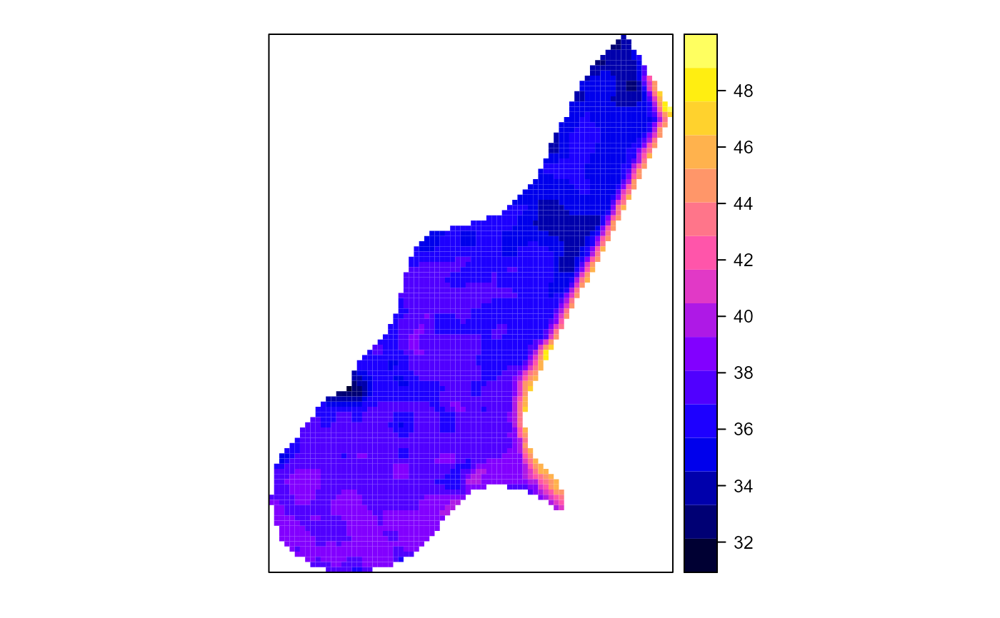
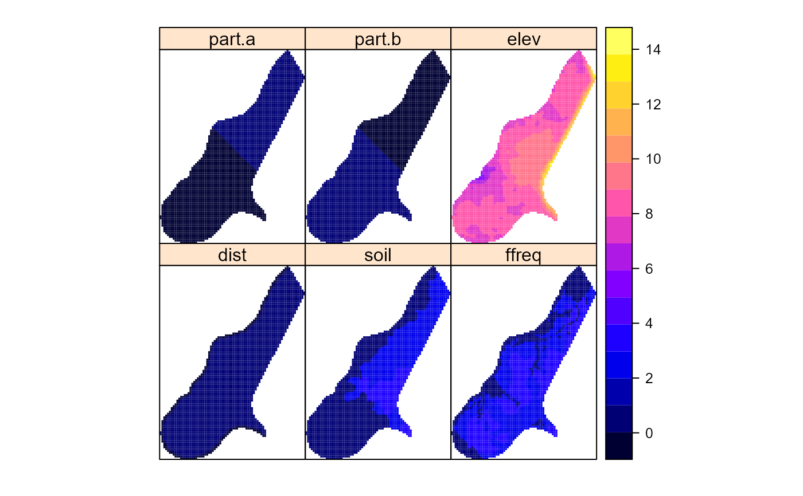

This function transforms a data frame into a spatial grid object, making it suitable for spatial analysis.
The function uses the columns specified in the coords parameter to define the spatial coordinates
in the data frame. The coordinate reference system (CRS) is specified by the crs_str parameter,
which defines how the spatial coordinates are interpreted. The resulting grid object can
be used for spatial analysis in various spatial data packages and tools.
Arguments
- x
A data frame containing the spatial data. The data frame must include columns that represent coordinates.
- coords
A character vector of length 2 specifying the names of the columns in the data frame that represent the x and y coordinates, respectively.
- crs_str
A character string or a
CRSobject representing the coordinate reference system to be assigned to the spatial object. IfNULL, no CRS is assigned, and a warning is issued.
Details
The function first checks that the input x is a data frame and that the coords parameter
specifies two valid column names in x. The columns specified by coords are renamed to "Longitude"
and "Latitude" for internal processing.
The function then converts the data frame to a spatial object using the coordinates function
from the sp package, sets the coordinate reference system (CRS) using proj4string, and
finally converts the spatial points to a grid structure using gridded.
If a valid crs_str is not provided, the function will proceed without assigning a CRS,
but it will issue a warning. Assigning a CRS is important for ensuring that spatial data
aligns correctly with other spatial datasets.
Note
The function assumes that the input data frame is structured such that the coordinates
are in the same projection system. If the coordinates are in a different projection or are not projected,
the user must provide an appropriate crs_str.
References
Bivand, R. S., Pebesma, E., & Gómez-Rubio, V. (2013). Applied Spatial Data Analysis with R (2nd ed.). Springer. doi:10.1007/978-1-4614-7618-4
Pebesma, E., & Bivand, R. S. (2005). Classes and methods for spatial data in R. R News, 5(2), 9-13.
Examples
# Load the meuse.grid data
data(meuse.grid, package = "spEnviroDistr")
# Convert meuse.grid to a spatial grid with specified coordinates and CRS
meuse.grid <- toGrid(meuse.grid, coords = c("x", "y"), crs_str = "+init=epsg:28992")
# Plot the spatial grid
spplot(meuse.grid, "alt")

spplot(meuse.grid, c("dist", "soil", "ffreq", "part.a", "part.b", "elev"))
